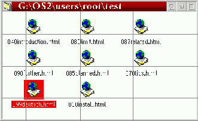

Questa funzione ä un po' complessa da spiegare. Si pensi a una cartella in cui gli oggetti siano disposti molto
alla rinfusa: capita spesso di cercare di allineare questi oggetti uno sotto l'altro o vicini tra loro.
Il menu "Riordina" non aiuta, dato che riordina completamente gli oggetti. Si immagini ora una serie
di linee equidistanti disposte sulla finestra della cartella, che attraggono gli oggetti lç presenti quando viene
selezionata l'opzione "Disporre a griglia".

La voce di menu "Disporre a griglia" sarÖ visibile solo sotto le seguenti condizioni:
Nota: con la V0.81, il comportamento di "Disporre a griglia" ä leggermente cambiato. Come valore assunto
XFolder allineerÖ alla griglia solo gli oggetti correntemente selezionati. Comunque, se si mantiene premuto
il tasto Maiusc durante la selezione dell'opzione, tutti gli elementi presenti verranno allineati
(come nelle precedenti versioni).